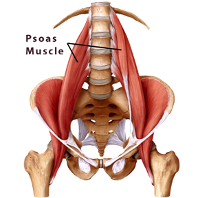

Studii & Cercetare
Dovezi clinice, disertații și publicații despre TRE® adunate din întreaga lume în ultimii 15 ani — și planurile noastre pentru cercetarea metodei în România.

De ce cercetăm TRE®
Există o mulțime de dovezi elocvente și anecdotice cu privire la TRE® și multe studii pilot privind rezultatele clinice care au verificat eficacitatea acestuia pe tot globul. Alte studii și cercetări sunt în curs de desfășurare, în diferite domenii și țări de pe glob. Cu toate acestea, sunt necesare și mai multe studii cantitative și calitative controlate, mai mari, mai de lungă durată sau pe eșantioane de populație mult mai numeroasă și mai diversă.
Pentru a putea contribui la acest demers și totodată pentru a da șansa unor specialiști din România de a se implica, a participa la orice program de cercetare în curs sau pentru a începe propriul program, Asociația TRE® România își propune crearea unui departament de cercetare a TRE® pe plan local în viitorul apropiat.
Între timp, vă invităm să descoperiți și să explorați studiile și cercetările efectuate de colegii noștri din întreaga lume în ultimii 15 ani, pe care le puteți accesa pe situl organizației TRE® for ALL din America.
TRE® se concentrează pe eliberarea mușchiului psoas, care conectează vertebrele lombare de pelvis. Acest mușchi puternic reține stresul fizic, emoțional și mental pe care îl purtăm în corpul nostru de-a lungul vieții.
PhD and Masters Dissertations
- Berceli D. Evaluating the effects of stress reduction exercises employing mild tremors: a pilot study [dissertation]. Phoenix (AZ): Arizona State University; 2009. — Download
- McCann T. An evaluation of the effects of a training program in Trauma Releasing Exercises on quality of life [master's thesis]. Cape Town, South Africa: University of Cape Town; 2011. — Download
- Macedo D. [Tension and Trauma Releasing Exercise: Application to situations of domestic violence] [Master's thesis]. Brasilia, Brazil: Universidade de Brasilia; 2013. Portuguese — Download
- Talvinen, Henna. The effects of TRE-method on stress relief: Research to describe the effects of TRE-method on stress relief among psychiatric healthcare employees. 2017. (Finnish with abstract in English) — Download
- Nordstroem, Jonas. Literature Synthesis on Neurogenic Tremor. [Research Paper] Saybrook University. RES2100: Research Foundations and Literacy, November 2021. — Download
- Atterbury, E.M. (2019). Exploring therapeutic neurogenic tremors with exercise as a treatment for selective motor and non-motor Parkinson's disease symptoms (Doctoral dissertation). Stellenbosch University, Stellenbosch, South Africa. Supervisor: Karen Estelle Welman. (Publications in progress)
- Hagberg, R. (2022). Experiences of the use of TRE®-exercises among adults who stutter: a quasi-experimental intervention study (Finnish with abstract in English). — View
Publications: Research
- Berceli D. [Neurogenic tremors: A body-oriented treatment for trauma in large populations]. Trauma und Gewalt. 2010 May; 4 (2):148-156. German. — Download
- Berceli D, Salmon M, Bonifas R, Ndefo N. Effects of self-induced unclassified tremors on quality of life among non-professional caregivers: A pilot study. Glob Adv Health Med. 2014;3(5):45-48. — Abstract
- Schweitzer E, Bradt KM. [Dem Malinowski-Blues entgehen: Körperorientierte Entspannungsübungen zur Stressbewältigung während der Feldforschung]. Ethnoscripts. 2015; 17(1): 228-242. German. — Download
- Herold, A. Preliminary Results of Several Small Sample Studies In The Ukraine, During TRE on Different Levels. Psychological Counseling and Psychotherapy; 2015; 2 (1-2). — Download
- Harrison EG, Keating JL, Morgan P. et al. Novel Exercises for Restless Legs Syndrome: A Randomized, Controlled Trial. J Am Board Fam Med 2018; 31:783–794. — Download
- Amaral MA, et al. Soluções Inovadoras para a Promoção de Saúde Mental de Adolescentes na Atenção Primária. Revista Adolescência e Saúde 2018; 15(1):66-72. — Portuguese Download
- Amaral MA, et al. Innovative Solutions for the Promotion of Adolescent Mental Health in Primary Care. Revista Adolescência e Saúde 2018; 15(1):66-72. — English Download
- Amaral MA, et al. Soluciones Innovadoras para la Promoción de Salud Mental de Adolescentes en la Atención Primaria. Revista Adolescência e Saúde 2018; 15(1):66-72. — Spanish Download
- Winkler S. Neurogenes Zittern als neuer Baustein in der Traumabehandlung? — Praktische Erfahrungen und theoretische Erläuterungen. Psychotherapeutenjournal 3-2018, S. 244-250. — View
- Предварительные результаты нескольких исследований, проведенных на небольшой выборке в Украине, во время тренингов TRE (упражнения для снятия стресса и травмы по Д. Берсели) на различных уровнях. — Download
- Heath R. and Beattie J. Case Report of a Former Soldier Using TRE for Post-Traumatic Stress Disorder Self-Care. Journal of Military and Veterans' Health, 2019, Vol 27; No.3. — View
- Thommessen, Cathrine Scharff & Fougner, Marit. Body awareness in acting — a case study of TRE as a supporting tool for drama students' personal and professional development. Journal of Theatre, Dance and Performance Training, 2020. — View
- M. Lynning, et al. Tension and trauma releasing exercises for people with multiple sclerosis — An exploratory pilot study. Journal of Traditional and Complementary Medicine, 2021. — View
- Berceli, D., & Holley, L. (2005). Evaluating the effects of stress reduction exercises. Unpublished paper, Arizona State University.
- Beattie, J., & Berceli, D. (2021). Global Case study: The effects of TRE on perceived stress, flourishing and chronic pain self-efficacy. — Full Version · Short Version
- Torres de Almeida, J., & Oberto Rodrigues, G. (2021). Tension Trauma Releasing Exercises (TRE) regulates the Autonomous Nervous System (ANS), increases Heart Rate Variability (HRV), and Improves Psychophysiological Stress in University Students. — View
- Oh, J. & Shin, C. S. A Pilot Study on the Anxiety Reduction Effect of Tension, Stress, and Trauma Releasing Exercises (TRE). Asia-pacific J Convergent Res Interchange 7, 379–388 (2021). — Download
- Johnson, S. A Body-Based Group Intervention for Teacher Stress and Burnout in High-Risk Schools. Acta Psychopathol 3, (2017). — Download
Research Reports
- Department of Defense Centers of Excellence for Psychological Health and Traumatic Brain Injury. Mind Body Skills for Regulating the Autonomic Nervous System. Published June 2011. — Download
- TRE Tension, Stress and Trauma Releasing Exercises (Evaluation eines ressourcenschonenden traumatherapeutischen Verfahren). — Download
- Salmon, M. Interim Research Report 2, May 2013. Pilot TRE Research program with Chrysalis Academy Students, Cape Town, South Africa. — Download
- Kent M. Neurogenic Tremors Training (TRE) for Stress and PTSD: A Controlled Clinical Trial: Final Report. June 2018. — Download
- Davis M, Hustead M, Dietrich B, Berceli D, and Kent, M. Neuromuscular Tremors as Tension and Trauma Releasing (TRE): From Cultural Practices to Controlled Clinical Trial (RCT) of TRE. International Society for Traumatic Stress Studies, 34th Annual Meeting, November 2018, Washington, DC. — Abstract
Publications: TRE® Frameworks and Methods
- Berceli D, Napoli M. A proposal for a mindfulness-based trauma-prevention program for social work professionals. Complement Health Pract Rev. 2007 Oct; 11 (3):1-13. — Abstract
- Heath, R. 'The Use of Trauma Release Exercises for Resilience Training & Early Intervention in the Australian Defence Force.' 2013. — Download
- Neurogenic Tremor Through TRE: Tension, Stress and Trauma Releasing Exercises according to D. Berceli in the Treatment of Post-Traumatic Stress Disorder (PTSD). 2015. — Download
- Edwards, Linda, Ph.D., M.A.P.S. The Potential Role of Trauma Releasing Exercises (TRE) in the Treatment of Trauma, PTSD and its Co-morbid Conditions including Anxiety, Depression and Somatoform Disorders. — Download
- Heath, R. 'Debriefing the Body: Supporting Health Related Quality of Life of Volunteers & First Responders through TRE Resilience Training.' Submission 120, Australian Parliamentary Inquiry, 2018. — Download
- Heath, R. 'A Trauma-informed Model of Shakes & Tremors, the Failure to Progress, Post-Traumatic Birth Recovery & Midwifery Self-care.' Practice Matters, Australian Midwifery News. 2018 (Summer edition). — Download
- Heath, R. (2021). 'Tremors, Trauma, TRE and Re-embodiment'. In The Art of Embodiment (pp. 37-50). Dance Therapy Association of Australasia. — View abstract · Purchase book
- Heath, R. 'Winning the War Within: Why Body-Based Trauma Recovery is a Missing Link in Preventing Defence & Veteran Suicide.' Submission to the Australian Royal Commission into Defence & Veteran Suicide. 2022. — Download
Conference Presentations
- Johnson S. Interventions for stress and burnout of secondary school educators in high-risk schools. 30th International Congress of Psychology; 2012, Cape Town, South Africa. — Download
- Nibel H. Shake it up baby! Trauma and Tension Releasing Exercises (TRE) as a new promising offering in promoting occupational health. Society of Occupational Science Spring Convention; 2015, Karlsruhe, Germany. — Download
- Nibel H. and Herold A. Evaluation of a resource-saving trauma-therapeutic procedure TRE. Congress of the DGWMP German Society for Military Medicine and Pharmacy, Gladbeck 2017. — Download
- Nibel H. and Herold A. Körperorientiertes Coaching für ressourcenschonendes Auflösen chronischer Stressreaktionen. Erdinger Coaching-Kongress, February 2017, Germany. — Download
- Stepišnik Perdih, Tjaša. TRE for athletes. 5th International Scientific Conference of the Slovenian Gymnastics Federation, Ljubljana, 2018, p. 151-159. — Download
- Lynning, Marie. Exploring outcomes of TRE on people with multiple sclerosis — a pilot study. RIMS conference, June 2019, Ljubljana. — View abstract · Slide
- Lynning, Marie. Perceived benefits of TRE among people with multiple sclerosis — qualitative results from a pilot study. RIMS conference, June 2019, Ljubljana. — View abstract · Slide
- Törmi, Kirsi. Hidden motion — working with deprived young adults in TRE and dance art. 7th Biennial ESTD Conference, October 2019, Rome. — View abstract
- Nissen, Michael. Using TRE with people with multiple sclerosis (MS) in The Danish Multiple Sclerosis Society. 7th Biennial ESTD Conference, October 2019, Rome. — View abstract
- Stepišnik Perdih, Tjaša. TRE for breast cancer survivors. 7th Biennial ESTD Conference, October 2019, Rome. — View abstract
- Amaral MA, et al. Programa de apoio emocional e redução de estresse para profissionais de saúde durante a pandemia da covid-19. First Virtual Congress of CONASEMS, 2020, Brazil. — View
Case Studies
- Salmon, M. June 2016. TRE Case Study: How often is Bi-Polar misdiagnosed? Somerset West, Western Cape, South Africa. — Link
- MyLife Organisation 2010-2011. TRE Case study: Stress in Youth. Cape Town, South Africa. — Watch
- Hruby, H. and Beattie, J. (2021). Case Study: The effects of TRE on depression, anxiety, and stress in First Responders. (Unpublished paper). — Link
Evaluations
- Rosenberg, T.: "Testing the TRE method among people with arthritis." External evaluation report for The Danish Arthritis Association, with support from TrygFonden. 2020. — View PDF
- Heath, R.: "Evaluation of Trauma Release Exercises (TRE) Workshop for Bushfire Affected Communities." TRE recovery workshops for survivors of the Black Saturday Bushfires, Australia. 2013. — View report
Research In Progress
- January 2022. Williams-Hindle, Hayley. 'Embodiment' in Autistic Cultural and Creative Leadership praxis. An exploration of method and insight. — Details
- October 2021 – March 2022. Embodiment through the use of TRE in autistic cultural and creative leadership praxis. Fellowship Grant: Arts and Humanities Research Council (AHRC). — Research extract
- December 2021 – October 2023. Zhi-Xia Mao. TCM and psychological intervention on patients with Somatic Symptom Disorders of Heart-Kidney Disharmony and its effect evaluation.
Referințele de mai sus sunt adunate de organizația TRE® for ALL. Pentru lista completă și cele mai recente studii, vizitează situl oficial.
Vrei să înțelegi mecanismul din spatele metodei?
Descoperă ce este TRE®, cum funcționează tremurul neurogenic și de ce corpul știe să se elibereze singur de tensiune.